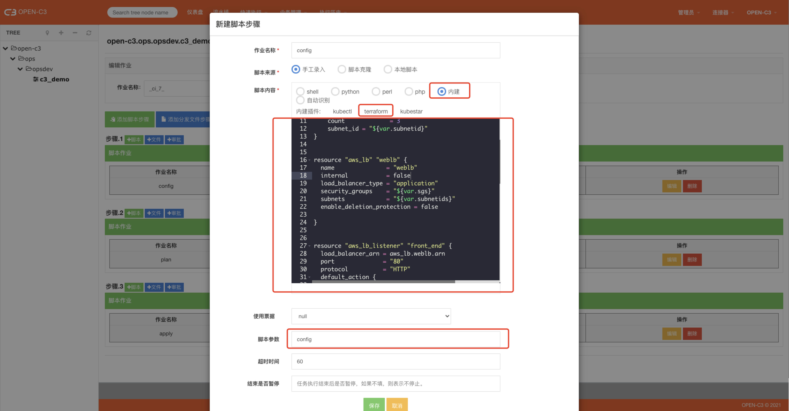
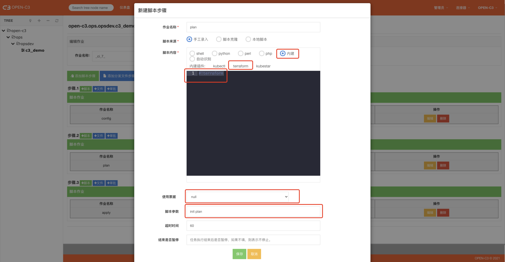
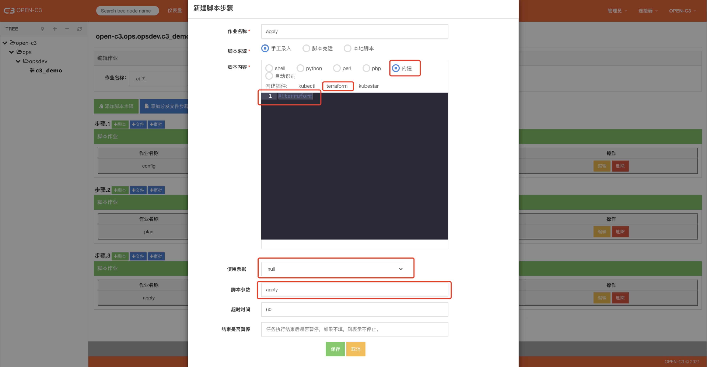
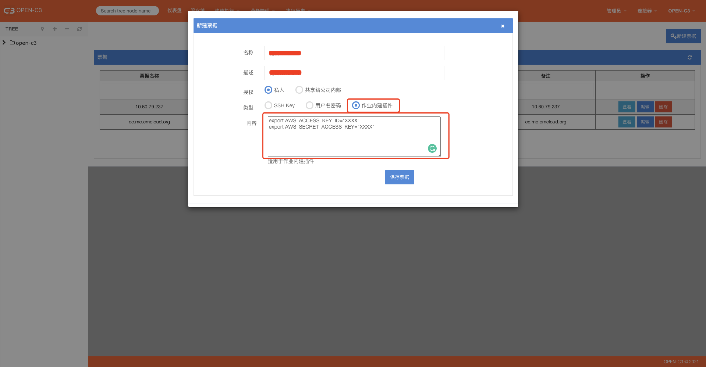

1. 简介
OPEN-C3提供了内建插件用于调用terraform，通过这个插件可以做资源编排。
2. 配置文件
config文件配置

使用内建插件，点击选择terraform类型。
脚本内容示例如下：
#!terraform
provider "aws" {
access_key = "XXXXXX"
secret_key = "XXXXXX"
region = "us-east-1"
}
resource "aws_instance" "web" {
ami = "ami-2757f631"
instance_type = "t2.micro"
count = 3
subnet_id = "${var.subnetid}"
}
resource "aws_lb" "weblb" {
name = "weblb"
internal = false
load_balancer_type = "application"
security_groups = "${var.sgs}"
subnets = "${var.subnetids}"
enable_deletion_protection = false
}
resource "aws_lb_listener" "front_end" {
load_balancer_arn = aws_lb.weblb.arn
port = "80"
protocol = "HTTP"
default_action {
type = "forward"
target_group_arn = aws_lb_target_group.webserver.arn
}
}
resource "aws_lb_target_group" "webserver" {
name = "webserver-targetgroup"
port = 80
protocol = "HTTP"
vpc_id = "${var.vpcid}"
}
resource "aws_lb_target_group_attachment" "web1" {
target_group_arn = aws_lb_target_group.webserver.arn
target_id = aws_instance.web[0].id
port = 80
}
resource "aws_lb_target_group_attachment" "web2" {
target_group_arn = aws_lb_target_group.webserver.arn
target_id = aws_instance.web[1].id
port = 80
}
resource "aws_lb_target_group_attachment" "test" {
target_group_arn = aws_lb_target_group.webserver.arn
target_id = aws_instance.web[0].id
port = 80
}
variable "vpcid" {
default = "vpc-07d7ed83ee7375813"
}
variable "subnetid" {
default = "subnet-0b7fd82a07b9b7f66"
}
variable "subnetids" {
default = ["subnet-0b7fd82a07b9b7f66", "subnet-08966f2af1fd1e3d8"]
}
variable "sgs" {
default = ["sg-08f7116e2c9325edb"]
}
票据： 空。上面配置的方式中key已经在配置文件中，所以这里不需要票据。
脚本参数： config
注： 每个terraform作业在系统中都会有一个独立的目录存放config文件。每个config可以编辑一个文件。
可以添加多个config步骤，如脚本参数中写 config lb.tf 。
则在目录中会有一个lb.tf文件。当脚本参数为config时候，其实是config main.tf。
2.1. 操作动作
有四个操作动作：init、plan、apply、destory
四个动作可以在一个步骤中执行，执行过程中按照脚本参数的顺序进行调用。
所以可以配置如下：
2.1.1. init & plan
使用内建插件，点击选择terraform类型。
脚本内容固定为如下：
#!terraform
票据： 空 脚本参数： init plan
这里是把init和plan两个动作在这里按照顺序执行，执行后可以在日志中看出如果真实执行apply的资源变化情况。
正常应该在plan之后添加一步审批操作，审批后执行下一步的apply。

2.1.2. apply
使用内建插件，点击选择terraform类型。
脚本内容固定为如下：
#!terraform
票据： 空 脚本参数： apply

2.1.3. destroy
和apply几乎一样，把脚本参数换成destory即可。destroy用户销毁资源 。
3. 票据
下面以AWS为例说明怎么管理票据，AWS通过下面两个环境变量来控制访问的key。
export AWS_ACCESS_KEY_ID="XXXX"
export AWS_SECRET_ACCESS_KEY="XXXX"
每一行的内容格式必须为： /^export\s+[A-Za-z0-9_]+="[A-Za-z0-9\/]+"\s*$/ 否则系统会提示错误。

如果确定使用票据的方式，在前面配置作业的过程中，除了config步骤，其他操作terraform 的步骤选择上票据。
4. 维护注意
需要手动维护OPEN-C3服务所在机器的terraform命令【单机版更新的是容器中的terraform】。
wget https://github.com/open-c3/open-c3-install-cache/job-buildin/terraform -O /bin/terraform
chmod +x /bin/terraform